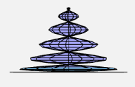

Goldener Ring mit einem Rubin
Ring
Ring erstellt aus einem antisymmetrischen Torus:
http://www.3d-meier.de/tut3/Seite59.html
Die Vertices des Rings sind nach Berechnung durch die Gleichungen mit dem Parameter 0.3 skaliert und in x- und y-Richtung verschoben worden.
Der Ring ist mit einem leichten Farbverlauf im goldenen Bereich koloriert, die "Innenseite" (Die Seite, die auf einem Finger aufliegt) des Rings ist etwas heller, als die "Aussenseite".
Rubin
Rubin gemacht aus einem Tropfen, mit einer niedrigen Unterteilung:
http://www.3d-meier.de/tut3/Seite44.html
Die Vertices des Rubins sind nach Berechnung durch die Gleichungen mit dem Parameter 0.15 skaliert, in x- und y-Richtung verschoben, sowie an der x-Achse gespiegelt worden.
Der Rubin ist mit einem leichten Farbverlauf im roten Bereich koloriert, die rechte Seite des Rubins erscheint etwas dunkler, als die linke Seite.
Abstrakter blauer Schmetterling (eigene Parametrisierung)
Genutzte Gleichungen
x: var x = v*Math.cos(2*v)*Math.cos(u)
y: var y = v*Math.cos(2*v)*Math.sin(4*u)*Math.sin(2*u)
z: var z = v*Math.sqrt(Math.sin(0.25*v))
Die Vertices des Schmetterlings sind nach Berechnung durch die Gleichungen mit dem Parameter 0.045 skaliert und in x-Richtung verschoben worden.
Der Schmetterling ist nur aus der oben abgebildeten Position zu erkennen. Von der Seite sieht es so aus:
